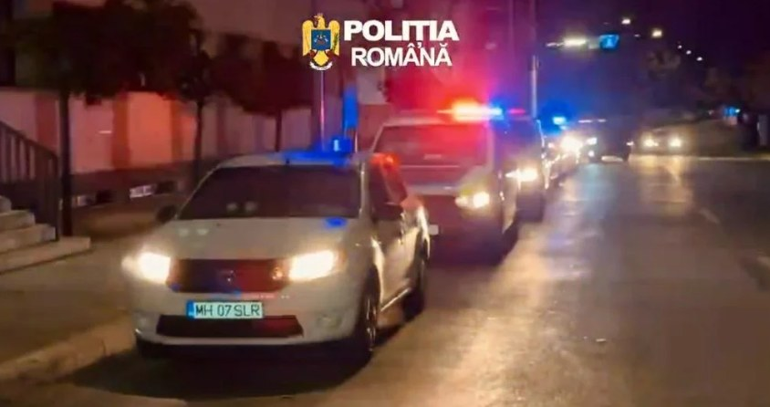

Percheziții domiciliare au fost efectuate de polițiști în Drobeta-Turnu Severin și în comuna Șimian, într-un dosar penal de furt în care prejudiciul depășește 60.000 de lei. Acțiunea s-a desfășurat cu sprijinul luptătorilor cu echipament de intervenție și al mai multor echipaje de poliție, care s-au deplasat simultan la adresele vizate.
Imaginile făcute publice de Poliția Română surprind momentul în care oamenii legii, echipați cu căști și veste de protecție, intră pe poarta uneia dintre locuințe, dar și coloana de autospeciale cu girofarurile pornite, pregătită să plece spre locațiile din dosar.
Descinderi în Severin și în comuna Șimian
Ancheta vizează fapte de furt care, cumulat, au produs o pagubă de peste 60.000 de lei – o sumă considerabilă pentru un dosar de acest tip la nivelul județului Mehedinți. Perchezițiile au fost organizate pentru strângerea de probe, identificarea bunurilor sustrase și clarificarea rolului fiecărei persoane cercetate în dosar.

Comuna Șimian se află în imediata vecinătate a municipiului Drobeta-Turnu Severin, iar legătura dintre cele două localități face ca multe dintre anchetele polițiștilor severineni să se extindă, firesc, și în zona periurbană. Faptul că descinderile au avut loc în ambele localități arată că anchetatorii au urmărit mai multe adrese în același timp, pentru ca eventualele probe să nu poată fi ascunse sau distruse.
Ce urmează în anchetă
După finalizarea perchezițiilor, persoanele vizate pot fi conduse la sediul poliției pentru audieri, iar obiectele și documentele ridicate sunt analizate de anchetatori. În funcție de probele strânse, procurorii decid ce măsuri se impun: de la continuarea cercetărilor sub control judiciar până la propunerea de reținere sau arestare preventivă.
Potrivit Codului penal, furtul (art. 228) se pedepsește cu închisoare de la 6 luni la 3 ani sau cu amendă, iar furtul calificat (art. 229) – de exemplu, săvârșit de mai multe persoane împreună, în timpul nopții sau prin efracție – atrage pedepse mai mari, care pot ajunge până la 10 ani de închisoare în formele agravate. Încadrarea juridică finală se stabilește de procurori, pe baza probelor.
Precizăm că efectuarea unei percheziții nu înseamnă că persoanele vizate sunt vinovate. Toate persoanele cercetate beneficiază de prezumția de nevinovăție până la pronunțarea unei hotărâri judecătorești definitive.
📌 Pe scurt
Ce: percheziții domiciliare într-un dosar penal de furt
Unde: municipiul Drobeta-Turnu Severin și comuna Șimian, județul Mehedinți
Prejudiciu: peste 60.000 de lei
Cine: polițiști mehedințeni, sprijiniți de luptători cu echipament de intervenție
Stadiu: cercetări în desfășurare
Cum vă protejați bunurile de hoți
Polițiștii reamintesc, periodic, câteva reguli simple care pot reduce riscul de a deveni victima unui furt:
- asigurați ușile, porțile și ferestrele, inclusiv la anexele gospodărești, garaje și magazii;
- nu lăsați bani, acte sau obiecte de valoare la vedere în autoturism sau în curte;
- montați, dacă este posibil, iluminat cu senzor de mișcare și un sistem de supraveghere video;
- notați seriile și fotografiați bunurile de valoare – ajută la identificarea lor dacă sunt recuperate;
- semnalați la 112 orice persoană sau autoturism suspect care dă târcoale locuințelor din zonă.
Vom reveni cu detalii pe măsură ce ancheta avansează. Pentru mai multe știri din Mehedinți, urmăriți secțiunea Cronica Neagră de pe MehedintiAzi.ro și pagina de Facebook Mehedinți Azi.
Redactia MehedintiAzi.ro